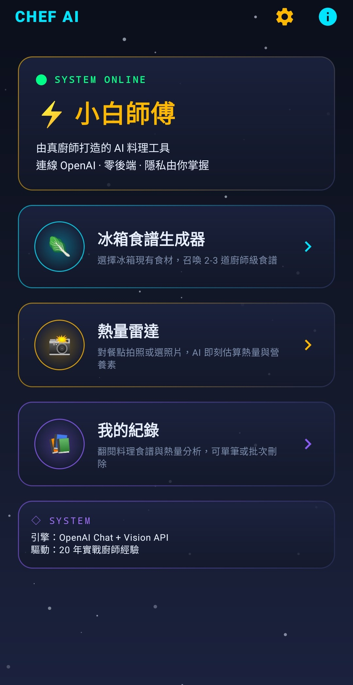
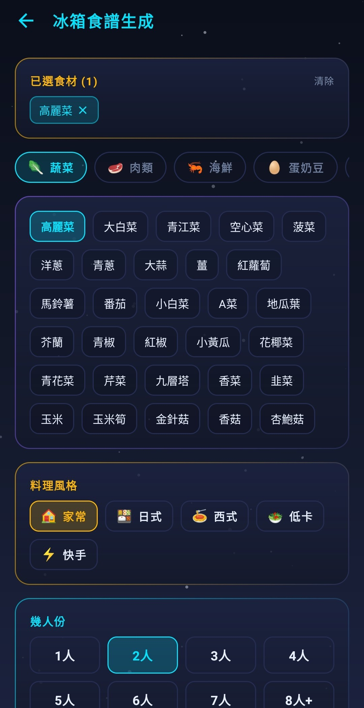
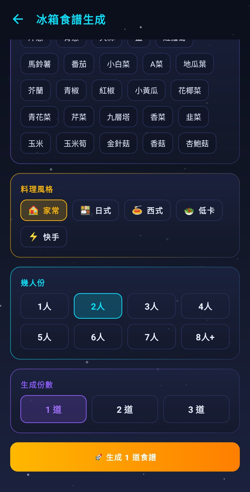
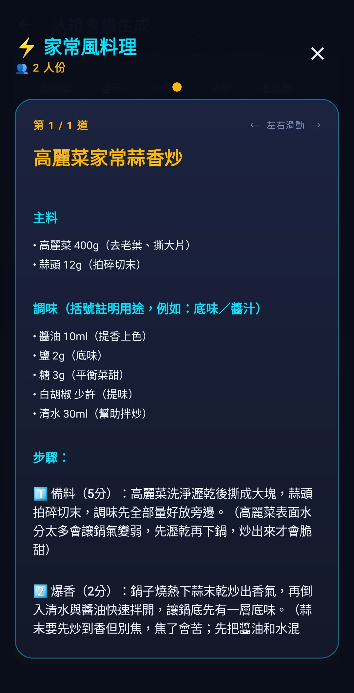
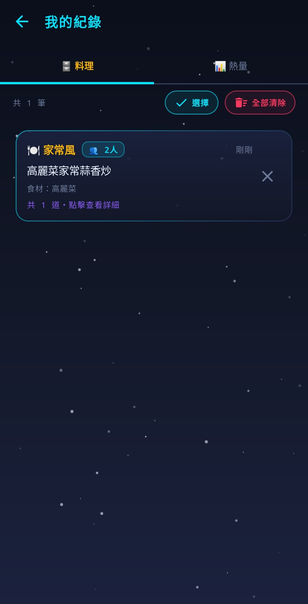

冰箱有什麼、就煮什麼 — 由 20 年廚師調教過的 AI，
每道食譜都有只有廚房老手才知道的眉角。
僅支援 Android 8.0 以上｜約 17.1 MB｜iPhone / iPad 無法安裝

廚師 AI 工具箱是一款 Android 料理助理 App，有三個核心功能：冰箱食譜生成器、熱量雷達、我的紀錄。
跟一般 AI 食譜 App 最不一樣的地方 — 食譜不是機器直接丟給你，而是經過真廚師反覆調教的 AI 出的，每個步驟都會告訴你「為什麼這樣做」：醃肉順序、翻鍋時機、醬油沿鍋邊淋的原因。像一個真的會做菜的朋友站在旁邊講給你聽。
App 本身完全免費。沒有訂閱、沒有廣告、沒有後端伺服器。你用自己的 OpenAI API Key，AI 費用直接進你的帳戶，開發者一分錢都不碰。




| 作業系統 | Android 8.0（API 26）以上 |
| iOS 支援 | 不支援（iPhone / iPad 無法安裝） |
| 檔案大小 | 約 17.1 MB |
| 網路 | 需要網路（Wi-Fi 或行動數據） |
| 權限 | 相機（熱量雷達拍照）、照片（從相簿選圖） |
| 費用 | App 免費，需自備 OpenAI API Key（用多少扣多少） |
Android 8.0+ ｜ 約 17.1 MB